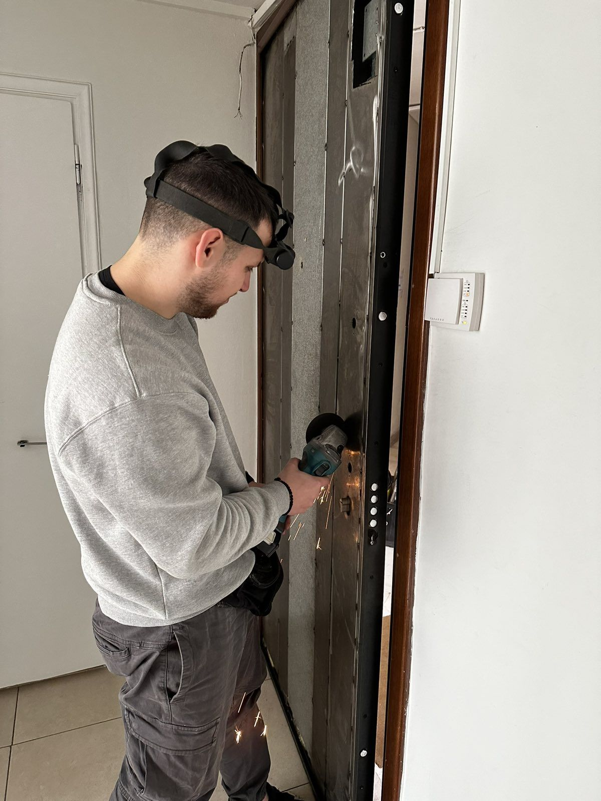
Θωρακισμένες πόρτες
Μετατροπές θωρακισμένων θυρών και αναβάθμιση της κλειδαριάς τους.
Θεμιστοκλέους 31, κοντά στην πλατεία Κάνιγγος
Κλειδιά, κλειδαριές, θωρακισμένες πόρτες, αυτοκίνητα και συναγερμοί. Ο πατέρας κάνει αυτή τη δουλειά 35 χρόνια και σήμερα τη συνεχίζει μαζί με τους δύο γιους του.
4,8 στα 5 από 74 κριτικές στο Google
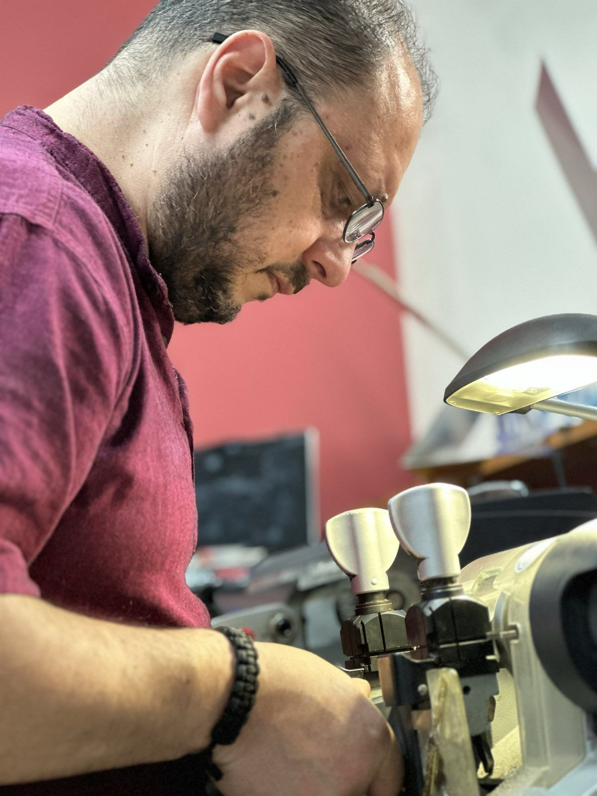
Από ένα αντίγραφο κλειδιού μέχρι ολόκληρη θωρακισμένη πόρτα. Αν δεν ξέρετε τι ακριβώς χρειάζεστε, πάρτε μας τηλέφωνο και θα σας πούμε.

Μετατροπές θωρακισμένων θυρών και αναβάθμιση της κλειδαριάς τους.
Τοποθέτηση, αλλαγή και επισκευή, από απλούς κυλίνδρους μέχρι έξυπνες κλειδαριές. Αλλάξτε κύλινδρο όταν μετακομίζετε ή όταν χάσετε κλειδιά.
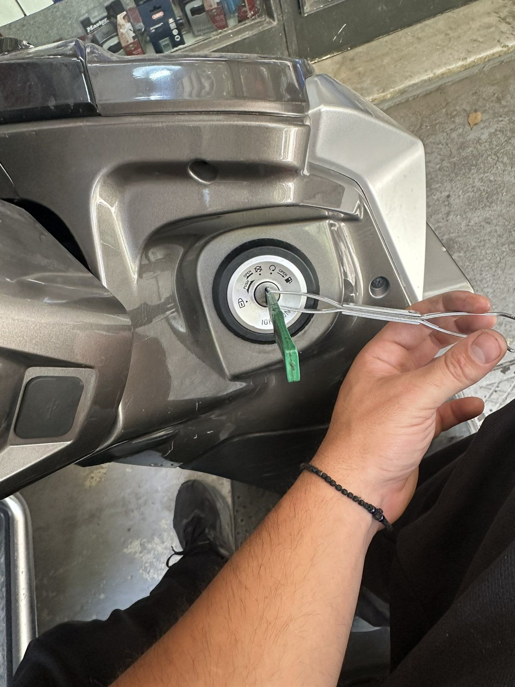
Κλειδιά, τηλεκοντρόλ, immobilizer και επισκευή κλειδιών αυτοκινήτου.
Αντίγραφα, κλειδιά ασφαλείας με κάρτα και σπάνια κλειδιά.
Ανοίγουμε πόρτες σπιτιών και καταστημάτων. Για την ασφάλειά σας, πριν ανοίξουμε ζητάμε ταυτότητα ή αποδεικτικό κατοικίας.
Ηλεκτρονικές κλειδαριές και είσοδος με κάρτα ή κωδικό, για πολυκατοικίες και επιχειρήσεις.
Συναγερμοί για σπίτια και καταστήματα.
Ηλεκτρικές κλειδαριές για καγκελόπορτες, μηχανισμοί επαναφοράς πόρτας και τηλεκοντρόλ γκαραζόπορτας.
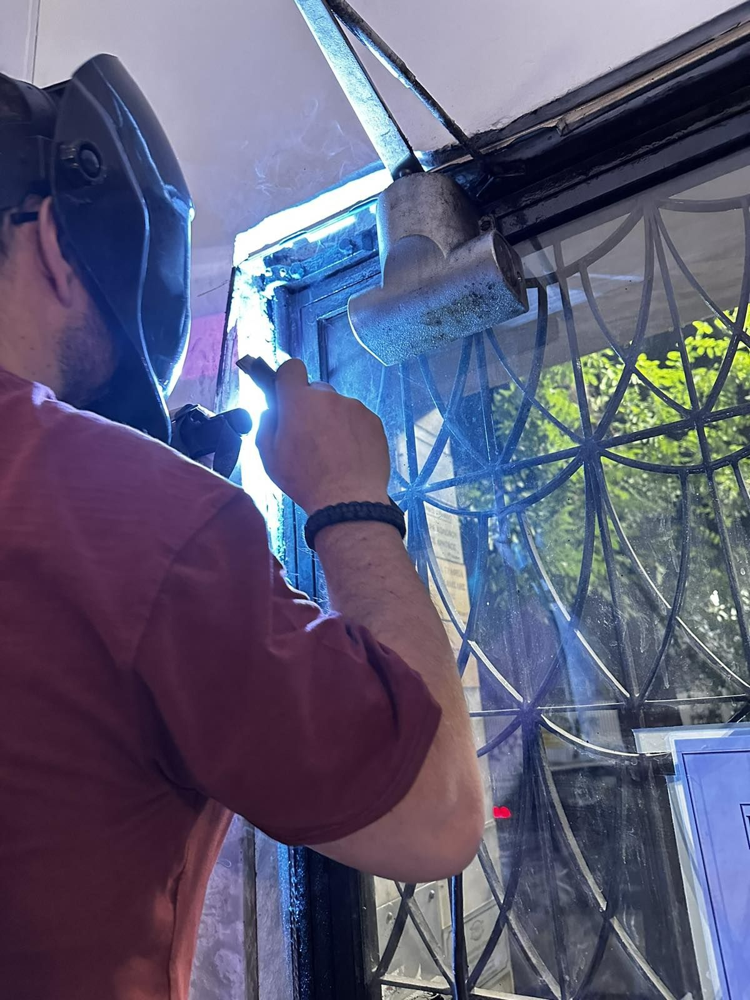
Φωτογραφίες από δουλειές μας σε σπίτια, πολυκατοικίες και επιχειρήσεις.
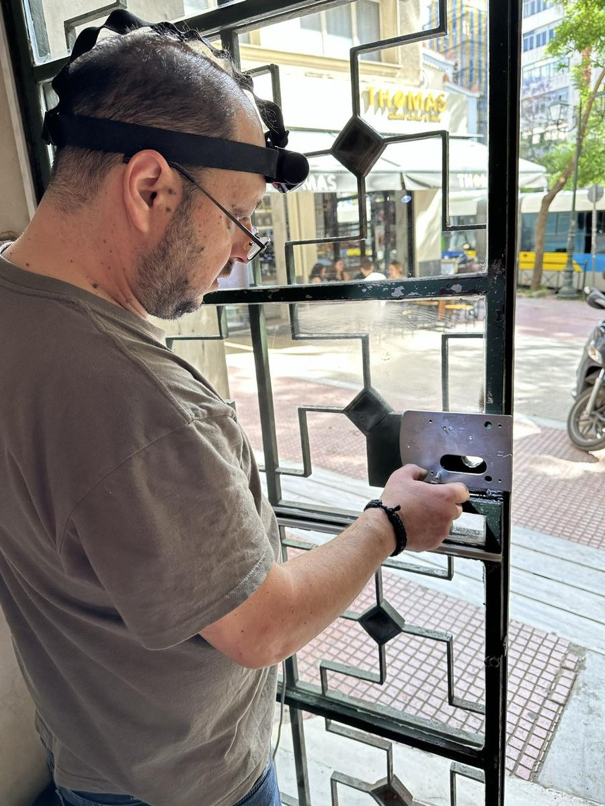
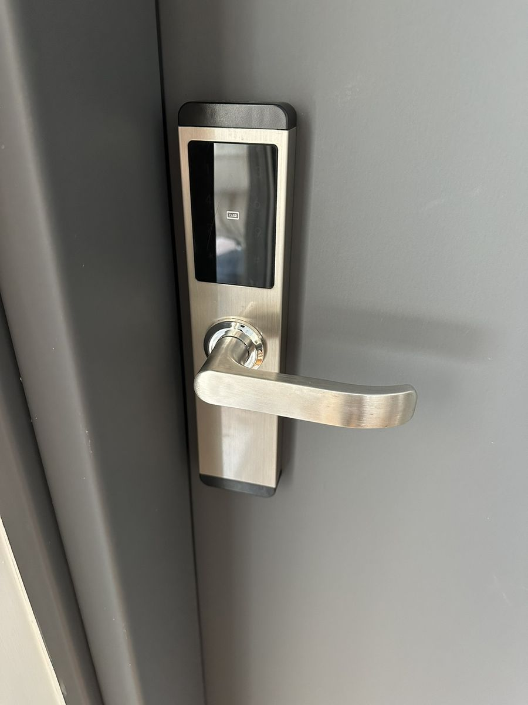
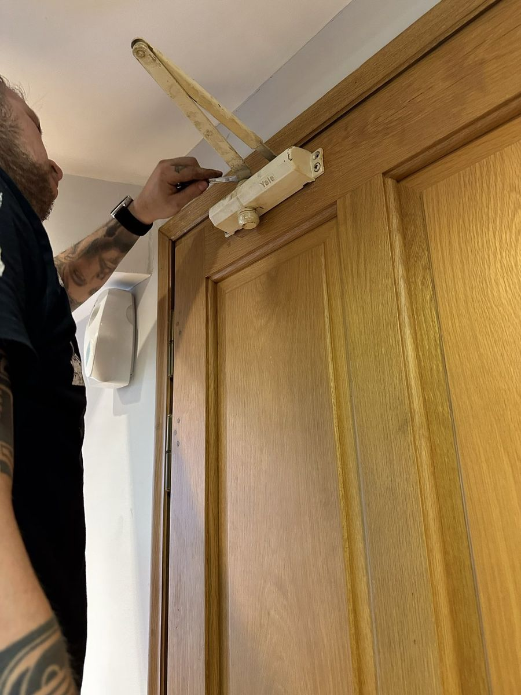
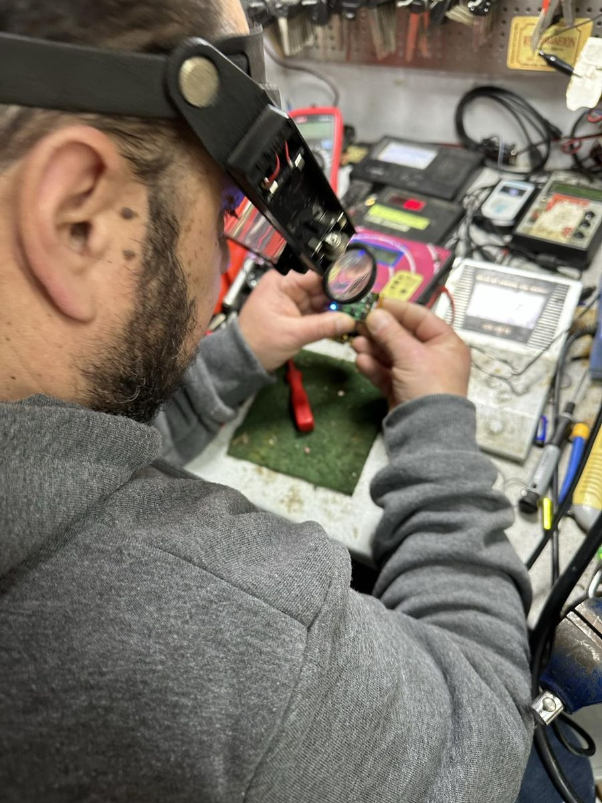
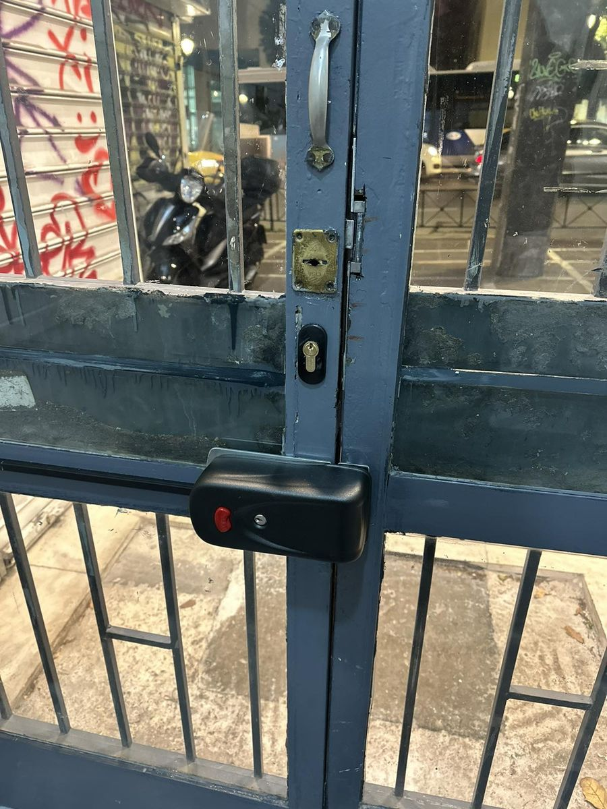
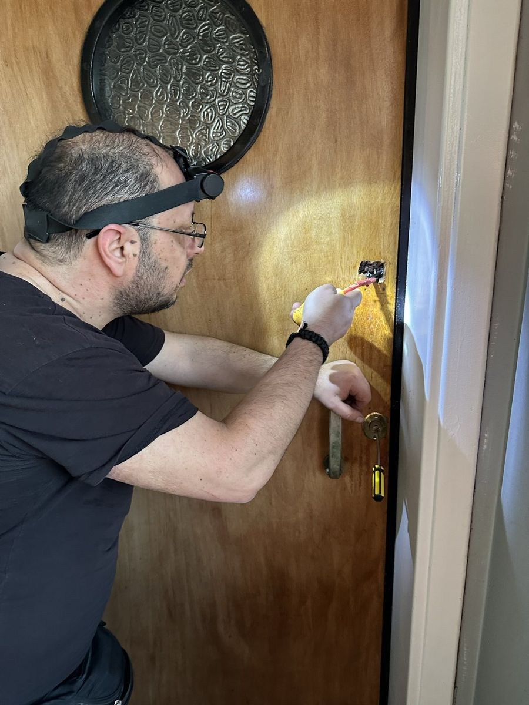
Πραγματικές δουλειές μας: πώς ήταν πριν και πώς τις αφήσαμε.
Σύρετε τη γραμμή πάνω στη φωτογραφία.
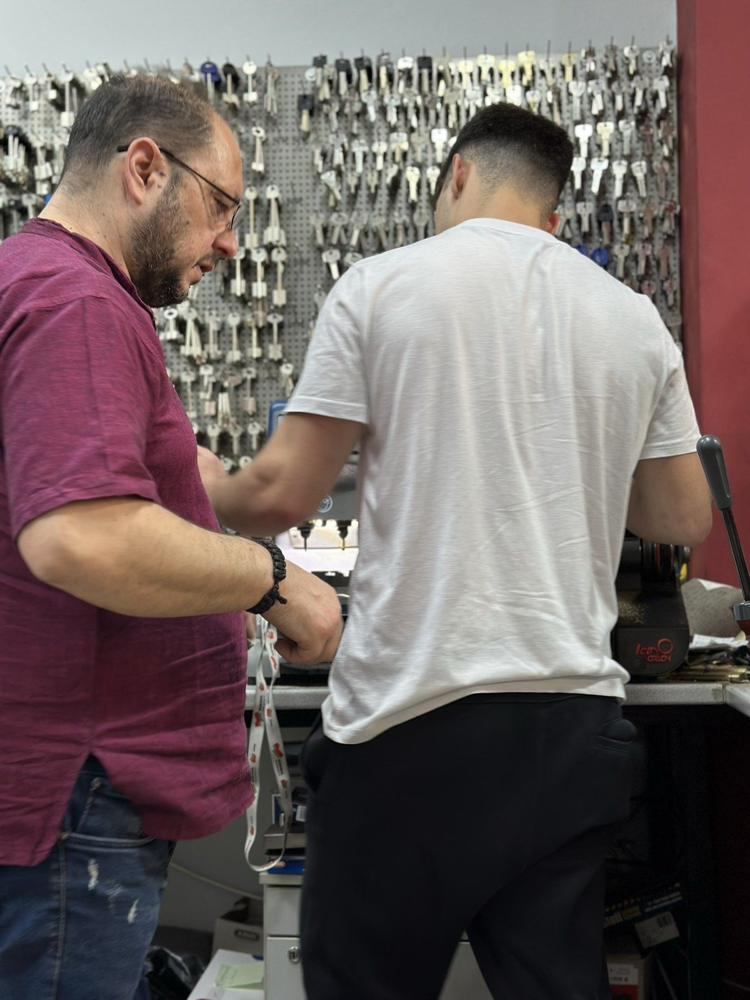
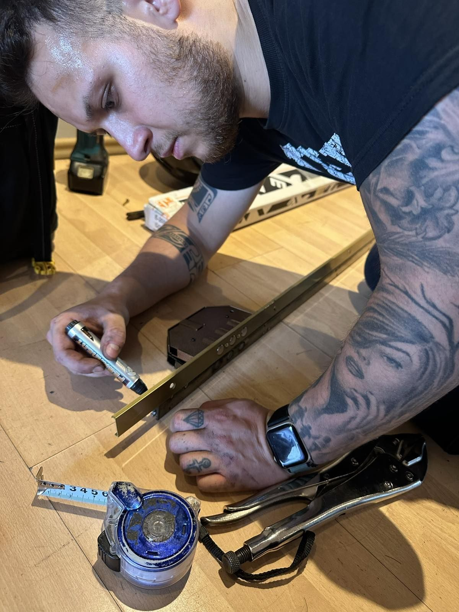
Το μαγαζί στη Θεμιστοκλέους το κρατάει ο πατέρας, που κάνει αυτή τη δουλειά εδώ και 35 χρόνια. Μαζί του δουλεύουν οι δύο γιοι του, στο μαγαζί και στα σπίτια των πελατών.
Είμαστε τρεις. Όταν μας καλείτε, μιλάτε με κάποιον από εμάς, και ο ίδιος άνθρωπος έρχεται να κάνει τη δουλειά.
Μέσος όρος 4,8 στα 5, από 74 κριτικές στο Google.
«Εξαιρετικός επαγγελματίας! Ο κλειδαράς ανταποκρίθηκε άμεσα, ήρθε στην ώρα του και έλυσε το πρόβλημα γρήγορα.»
«Στοχευμένη και άμεση εξυπηρέτηση! Το αφεντικό πολύ φιλικό και βοηθητικό, αλλά και ο γιος πολύ έξυπνος.»
Δεν βρίσκετε αυτό που ψάχνετε; Πάρτε μας τηλέφωνο και ρωτήστε μας.
Πάρτε μας τηλέφωνο στο 213 044 4629 και πείτε μας πού βρίσκεστε. Πριν ανοίξουμε την πόρτα θα σας ζητήσουμε ταυτότητα ή κάποιο έγγραφο που δείχνει ότι μένετε εκεί. Το κάνουμε για τη δική σας ασφάλεια.
Συνήθως όχι. Αν η πόρτα έχει κύλινδρο, δηλαδή τον «αφαλό» όπου μπαίνει το κλειδί, αλλάζουμε μόνο αυτόν και τα παλιά κλειδιά δεν ανοίγουν πια. Αν η κλειδαριά είναι παλιού τύπου, με το μακρύ κλειδί που λέγεται «πρόκα», μπορεί να μετατραπεί σε κύλινδρο.
Ναι. Για πολλά κλειδιά ασφαλείας χρειάζεται και η κάρτα που πήρατε μαζί με την κλειδαριά, γιατί χωρίς αυτήν το αντίγραφο δεν βγαίνει. Φέρτε στο μαγαζί το κλειδί και την κάρτα.
Πολλές θωρακισμένες πόρτες έχουν ακόμα κλειδαριά με πρόκα. Με τη μετατροπή βάζουμε στην ίδια πόρτα κλειδαριά με κύλινδρο ασφαλείας, χωρίς να χρειαστεί να αλλάξετε την πόρτα.
Εξαρτάται από τη δουλειά. Αντίγραφα κλειδιών και αγορές γίνονται στο μαγαζί. Για ανοίγματα, αλλαγές κλειδαριάς, θωρακισμένες πόρτες, συναγερμούς και τοποθετήσεις ερχόμαστε εμείς σε εσάς.
Ναι. Κλειδιά, τηλεκοντρόλ, immobilizer και επισκευές σε κλειδιά που χάλασαν, για αυτοκίνητα και μηχανές. Πείτε μας στο τηλέφωνο μάρκα, μοντέλο και χρονιά, για να σας πούμε τι χρειάζεται.
Κλειδαριές, κυλίνδρους, λουκέτα και πόμολα. Αν δεν ξέρετε τι ταιριάζει στην πόρτα σας, φέρτε μια φωτογραφία της ή τον παλιό κύλινδρο και θα σας δείξουμε.
Στη Θεμιστοκλέους 31, κοντά στην πλατεία Κάνιγγος, λίγα λεπτά με τα πόδια από τους σταθμούς του μετρό Ομόνοια και Πανεπιστήμιο. Οδηγίες στον χάρτη
Στο μαγαζί θα βρείτε επίσης κλειδαριές, κυλίνδρους, λουκέτα και πόμολα.
| Δευτέρα | 9:00 – 16:00 |
|---|---|
| Τρίτη | 9:00 – 20:00 |
| Τετάρτη | 9:00 – 16:00 |
| Πέμπτη | 9:00 – 20:00 |
| Παρασκευή | 9:00 – 20:00 |
| Σάββατο | 10:00 – 14:30 |
| Κυριακή | Κλειστά |
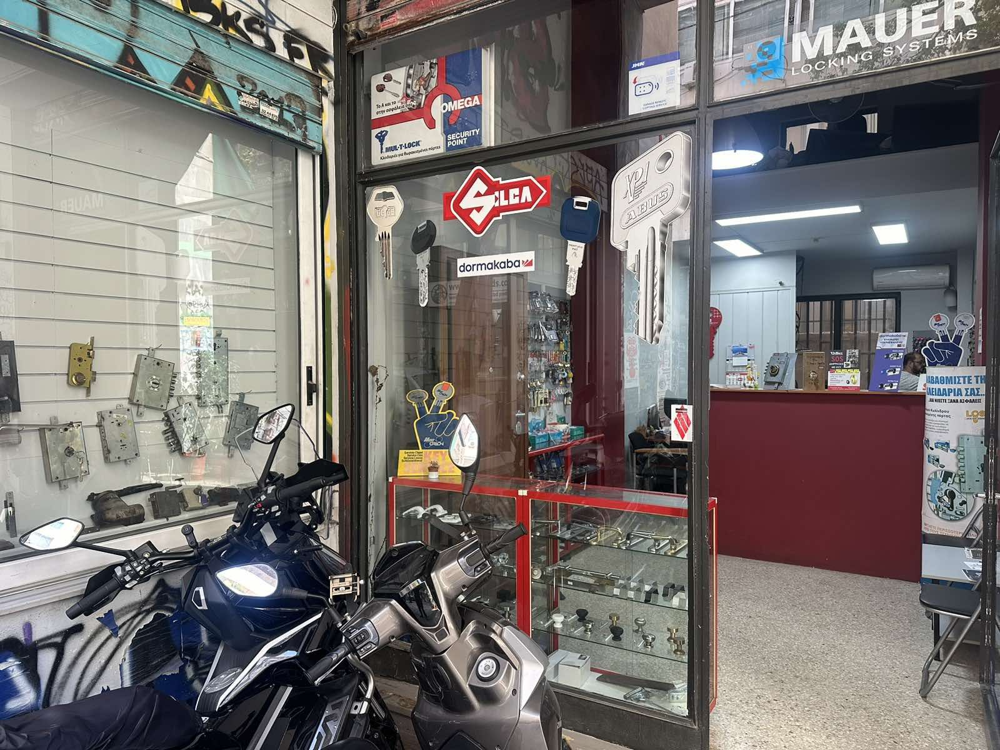
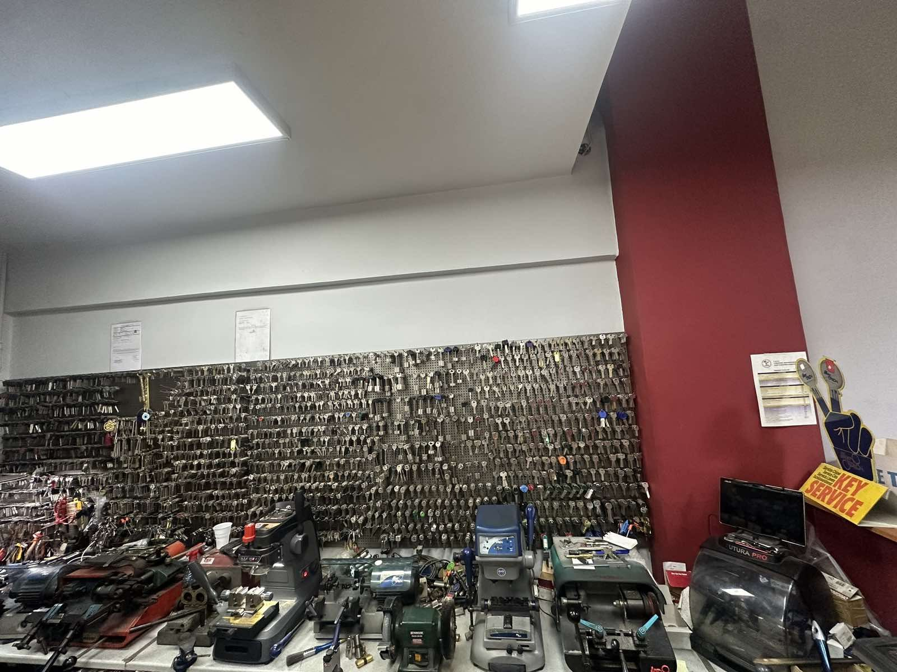